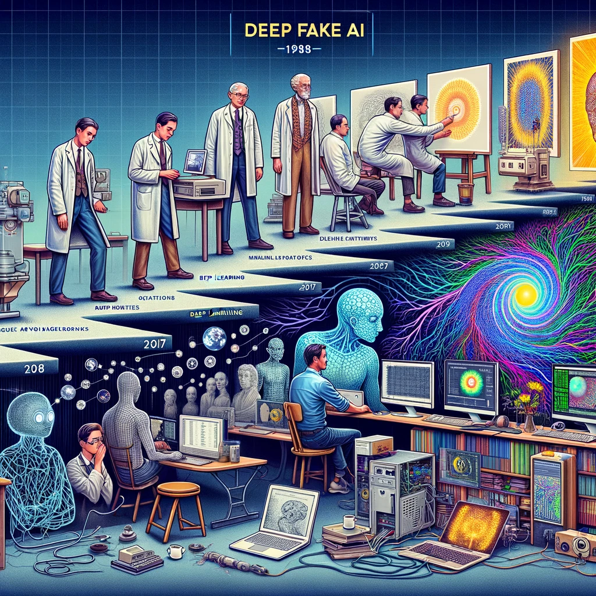

Home
Introduction
Applications
Critical Discussion
Future Outlook

IT 304 DL3 Final Project
Presented By: Saurav, Estifanos, Aleeza, Marzana
References
Images created by OpenAI's DALL-E, an AI image generator, based on provided descriptions of deepfake technology. Accessed November 29th, 2023.